09/08/2024 — Bệnh nhân 46 tuổi đau ngực xuất hiện nhịp QRS rộng — xem nhiều ví dụ
Bản dịch tiếng Việt của bài "46 year old with chest pain develops a wide complex rhythm — see many examples" – Dr. Smith’s ECG Blog. Giữ nguyên toàn bộ 18 hình ảnh của bản gốc.
Tác giả: Colin Jenkins và Nhu-Nguyen Le, biên tập bởi Willy Frick và Smith
Một bệnh nhân nam 46 tuổi đến khoa cấp cứu vì đau ngực sau xương ức dữ dội kèm buồn nôn 2 ngày nay. Bệnh nhân khai có tiền sử “Wolf-Parkinson-White” và “nhồi máu cơ tim” nhưng nói rằng cả hai đều chưa từng được điều trị. Các chẩn đoán này không có trong hồ sơ bệnh án, thậm chí cũng không có điện tâm đồ nền nào. Bệnh nhân không có vấn đề bệnh lý nào được ghi nhận trước đó ngoại trừ sử dụng nhiều chất gây nghiện. Một điện tâm đồ được ghi ngay sau khi bệnh nhân đến:

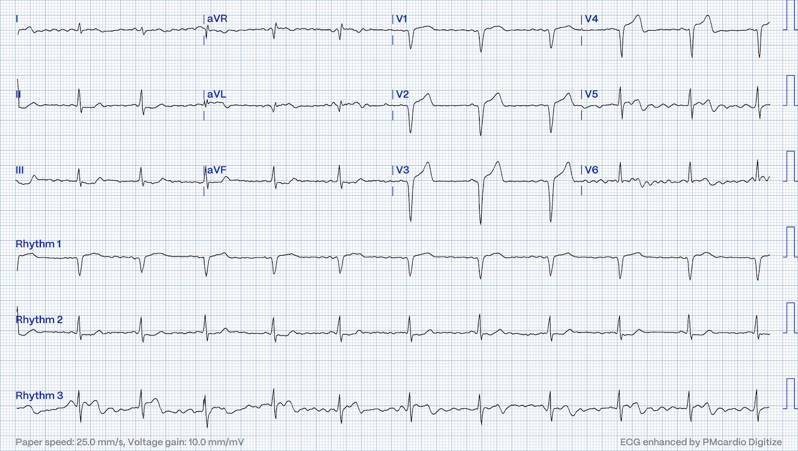
Bạn nghĩ gì?
Không có bằng chứng của WPW trên điện tâm đồ này, nhưng nó có giá trị chẩn đoán OMI. Cụ thể, chúng ta thấy:
- ST chênh lên (STE) và sóng T tối cấp (HATW) khắp các chuyển đạo trước tim
- Sóng Q ở V1-V4
- STE và HATW kín đáo ở I và aVL
- Sóng T đảo ngược (TWI) ở phần cuối gợi ý tái tưới máu sớm, rõ nhất ở I, aVL, V5 và V6
- ST chênh xuống (STD) soi gương kèm sóng T dạng xuống-lên (down-up) do thiếu máu cục bộ ở II, III, aVF
Đây là kết quả đọc của Queen of Hearts kèm khả năng giải thích của AI:

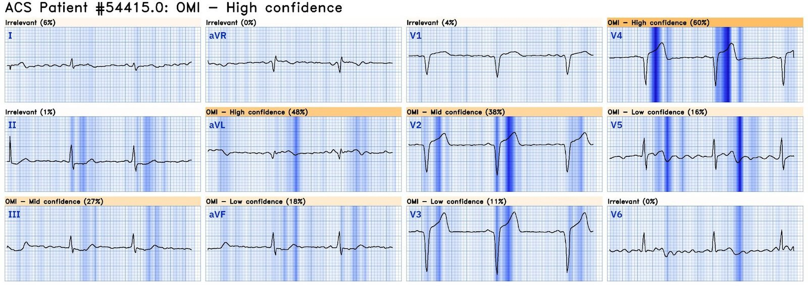
Bấm vào đây để đăng ký quyền truy cập Queen of Hearts
Điện tâm đồ được bác sĩ cấp cứu ký kết luận “Không có STEMI” và các thăm dò cơ bản cho đau ngực được tiến hành. Khoảng một giờ sau, kết quả troponin I độ nhạy cao là 3,000 ng/L (tham chiếu 3-54 ng/L). Bệnh nhân vẫn tiếp tục đau ngực. Ba điện tâm đồ nữa được ghi trong 5 phút tiếp theo:

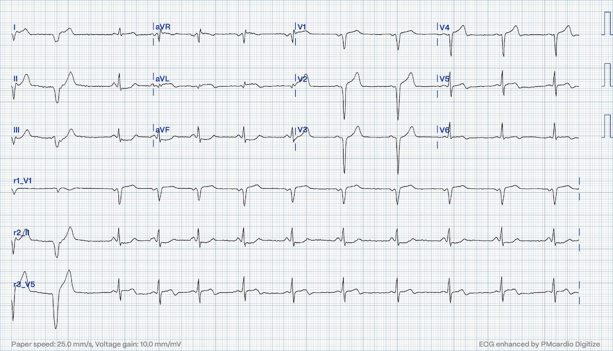

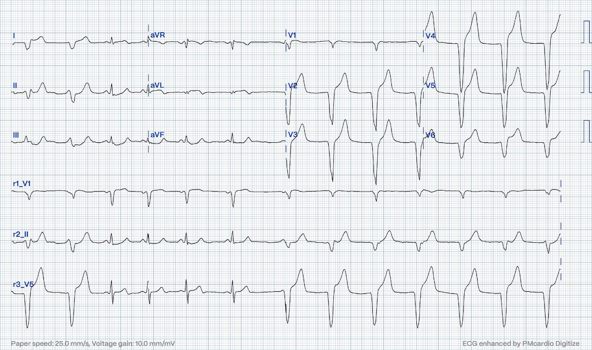

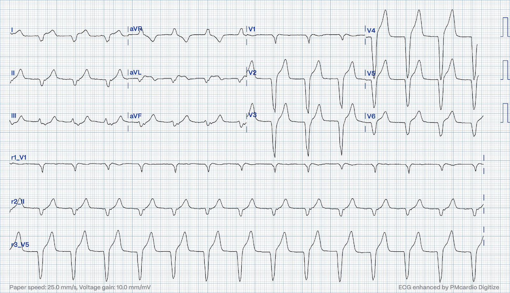
Queen of Hearts chẩn đoán OMI với độ tin cậy cao ở cả ba điện tâm đồ này. Chúng ta đang thấy gì ở đây? Nhịp là AIVR — nhịp tự thất gia tốc. Nhịp này đã được bàn nhiều lần trước đây trên blog này. (Xem giản đồ bậc thang (laddergram) của điện tâm đồ thứ 3 trong ca hôm nay cho thấy AIVR — trong phần minh họa/bàn luận của Ken Grauer bên dưới).
Có ba cơ chế gây loạn nhịp: tự động, vào lại và khởi kích. Bàn luận chuyên sâu nằm ngoài phạm vi của blog này.
Tóm tắt, hoạt động khởi kích là một lần khử cực bổ sung xảy ra sau lần khử cực ban đầu và chủ yếu do calci trung gian. Loạn nhịp khởi kích hay gặp nhất là xoắn đỉnh (Torsades de Pointes).
Hoạt động tự động là chức năng tạo nhịp tăng cường (thường từ một ổ không phải nút xoang), ví dụ nhịp nhanh nhĩ. Nhưng nút xoang cũng hoạt động theo cơ chế tự động, và mọi nhịp thoát cũng vậy.
Cuối cùng, vào lại xảy ra khi một vòng mạch trong tim cho phép khử cực liên tục mô còn khả năng kích thích quanh một lõi mô không kích thích được. Nếu vòng mạch đã tái cực xong vào lúc xung động quay về điểm xuất phát, nó sẽ tiếp tục khử cực vòng quanh mãi. Điều này có thể xảy ra do sẹo (ví dụ VT sau nhồi máu) hoặc do biến thể giải phẫu (ví dụ AVNRT hoặc AVRT).
Điều quan trọng là, dù cơ chế chưa được xác định chính xác, AIVR được cho là nhiều khả năng nhất có bản chất tự động [Ferrier, Kaplinsky]. Do tần số chậm (50-120 nhịp/phút) so với VT do vào lại (thường từ 180 nhịp/phút trở lên), nó thường không ảnh hưởng tới cung lượng tim hiệu quả. Đây là một loạn nhịp lành tính, không cần điều trị đặc hiệu.
Ở bệnh nhân này, AIVR hoàn toàn không gây ngạc nhiên vì điện tâm đồ đầu tiên đã cho thấy tái tưới máu sớm, và AIVR thường gặp trong giai đoạn tái tưới máu. Nếu còn chút nghi ngờ nào về khả năng OMI đã tái tưới máu, thì việc thấy AIVR khẳng định điều đó.
Bệnh nhân được dùng aspirin, heparin, morphin và ondansetron rồi được chuyển tới một cơ sở có khả năng làm PCI với chẩn đoán “đau thắt ngực không ổn định” kèm thay đổi điện tâm đồ động. (Frick — người ta không khỏi thắc mắc về chẩn đoán đau thắt ngực không ổn định ở một bệnh nhân có dấu ấn sinh học tăng đáng kể, mà chắc chắn sẽ còn tăng tiếp khi đo lại.) Khoảng 2 giờ sau, bệnh nhân đến trung tâm có khả năng làm PCI và được ghi lại điện tâm đồ:

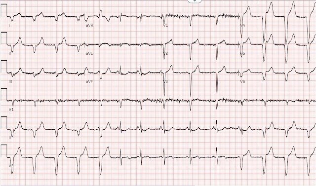
Đội cấp cứu ngoài viện (EMS) vận chuyển ghi nhận có “các loạt VT” trong lúc chuyển viện. Bác sĩ cấp cứu tiếp nhận đã hội chẩn với bác sĩ tim mạch can thiệp, người khẳng định không có STEMI. Tuy nhiên bệnh nhân vẫn tiếp tục đau ngực và siêu âm tại giường cho thấy giảm động vách liên thất với LVEF giảm đáng kể. May mắn là sau đó bệnh nhân đã được đưa đi chụp mạch vành. Hình ảnh được trình bày bên dưới:
Đây là mặt chiếu RAO (chếch trước phải) chếch chân (caudal). Thông thường mặt chiếu này tốt nhất để xem LCx và các nhánh bờ tù (OM), nhưng nó cũng cho thấy rõ mỏm cụt nhỏ xíu còn lại của LAD, động mạch bị tắc ngay tại lỗ xuất phát.

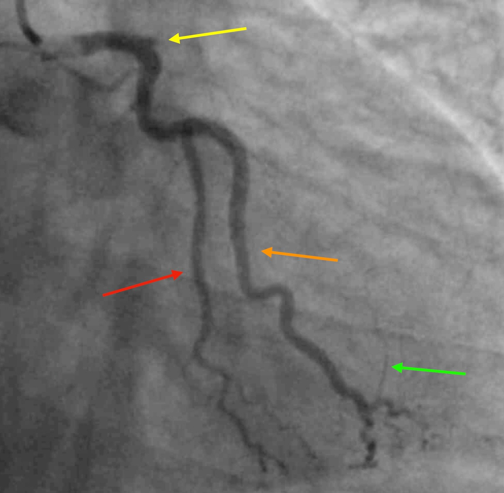
Nếu LAD bị tắc hoàn toàn, vậy tại sao điện tâm đồ lại cho thấy tái tưới máu? Có hai cách giải thích khả dĩ (và chúng không loại trừ lẫn nhau).
Giải thích 1: Đã có một mức độ tưới máu xuôi dòng nào đó vào thời điểm ghi điện tâm đồ, nhưng sau đó LAD đã tắc lại. Chụp mạch vành chỉ là một lát cắt tại một thời điểm. Điện tâm đồ cho bạn biết tình trạng của mạch máu vào thời điểm ghi điện tâm đồ, và tình trạng đó có thể thay đổi khi bệnh nhân tới phòng thông tim (cath lab). Nhất là khi bệnh nhân được dùng thuốc chống huyết khối.
Giải thích 2: Mũi tên xanh lá có lẽ cho thấy tuần hoàn bàng hệ từ đoạn xa OM tới LAD, dù điều này không hoàn toàn rõ trên các hình ảnh hiện có. Tuần hoàn bàng hệ cứu vãn có thể hình thành khá nhanh, và có thể một lượng nhỏ tưới máu ngược dòng là đủ để tạo ra các thay đổi trên điện tâm đồ. Đây là một lý do để không dùng các dấu hiệu tái tưới máu trên điện tâm đồ để biện minh cho việc trì hoãn chụp mạch vành.
Đây là hình ảnh sau PCI. Đây là mặt chiếu RAO chếch đầu (cranial), tốt nhất để quan sát LAD và các nhánh chéo, vốn đã tắc hoàn toàn trước PCI. Các mạch LCx và OM không được thấy rõ bằng.

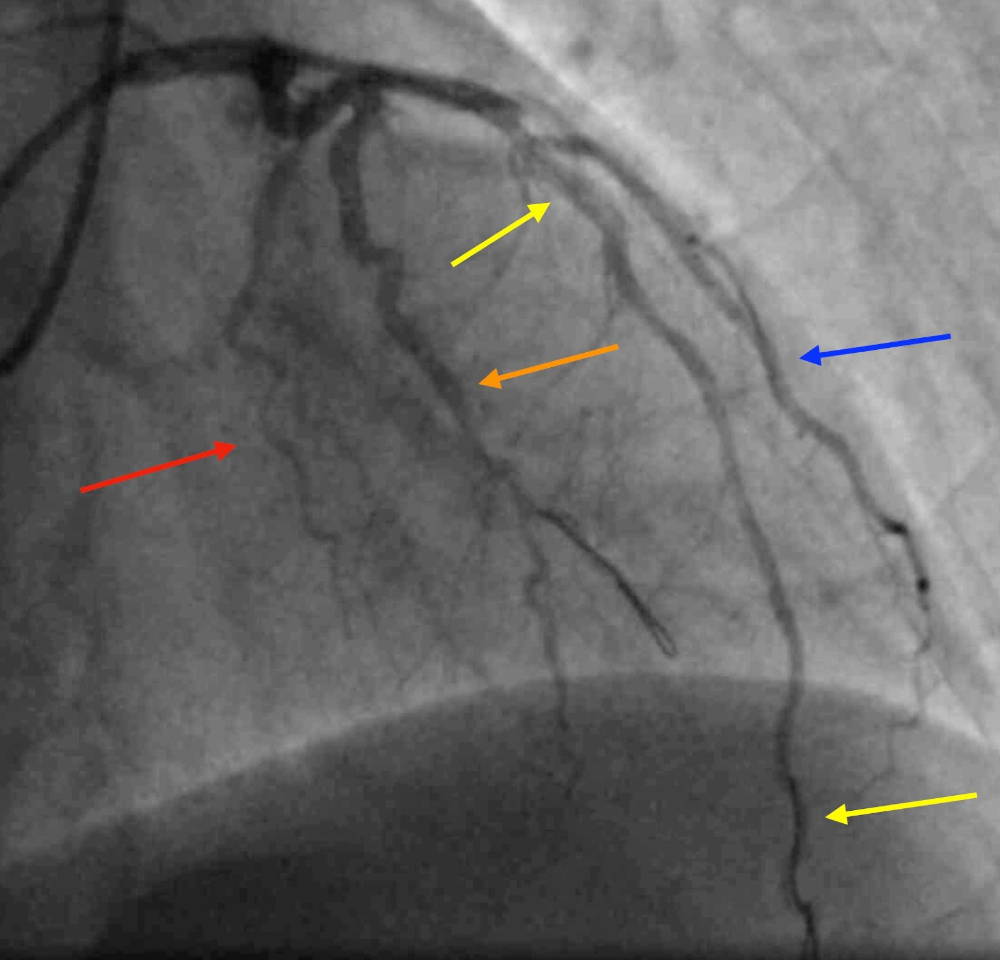
Những điểm cần học:
- Cả bệnh nhân lẫn các nhân viên y tế khác đều có thể cung cấp thông tin gây nhầm lẫn và thường mâu thuẫn, làm che lấp chẩn đoán (trong ca này là WPW). Nếu bệnh sử và các dấu hiệu điện tâm đồ đáng lo ngại, hãy dùng phán đoán lâm sàng của bạn để đấu tranh cho việc làm PCI.
- Hãy ghi các điện tâm đồ liên tiếp ngay cả khi triệu chứng không thay đổi. Các điện tâm đồ liên tiếp giúp tăng khả năng chẩn đoán hội chứng vành cấp. Tuy nhiên, Smith và Meyers đã chứng minh rằng các dấu hiệu gọi là “sớm” như sóng T tối cấp thường không tiến triển thành ST chênh lên đạt tiêu chuẩn chẩn đoán.
- AIVR không phải lúc nào cũng là hậu quả của bệnh lý đáng kể, nhưng kinh điển gắn liền với giai đoạn tái tưới máu của nhồi máu cơ tim cấp.
- Tương tự, mô hình OMI coi ACS là một quá trình động, trong đó các thay đổi điện tâm đồ phản ánh giai đoạn tổn thương cơ tim và giúp phân tầng nguy cơ xem bệnh nhân nào có thể hưởng lợi từ PCI cấp cứu.
- Dù việc dùng morphin không ảnh hưởng tới việc nhận ra OMI trong ca này, hãy thận trọng khi giảm đau trong ACS đang diễn ra mà chưa có kế hoạch chụp mạch vành rõ ràng. Thuốc nhóm opioid liên quan đến kết cục xấu hơn trong nhồi máu cơ tim, có lẽ vì chúng xóa đi tín hiệu đau vốn báo cho bác sĩ biết mức độ khẩn cấp của việc tái thông mạch.
- Không điều trị AIVR. Thực tế, dùng thuốc chống loạn nhịp (ví dụ lidocaine) có thể gây nhịp chậm nặng hoặc vô tâm thu (Weinberg, Sadowski và Alexander, xem bên dưới)
- Sự hiện diện của nhịp tự thất gia tốc không ảnh hưởng tới tiên lượng, và không có bằng chứng xác đáng rằng nếu không điều trị thì tỷ lệ rung thất hay tử vong sẽ tăng lên. Nói cách khác, đây là một nhịp an toàn. Hãy để yên nó. (Bigger và cs., xem bên dưới)
Các ví dụ khác về AIVR:
Young man with Gunshot wound to right chest with hemorrhagic shock, but bullet path not near heart. A case of irregular accelerated idioventricular rhythm (AIVR) (Nam thanh niên bị vết thương do đạn bắn ở ngực phải kèm sốc mất máu, nhưng đường đạn không đi gần tim. Một ca nhịp tự thất gia tốc (AIVR) không đều)

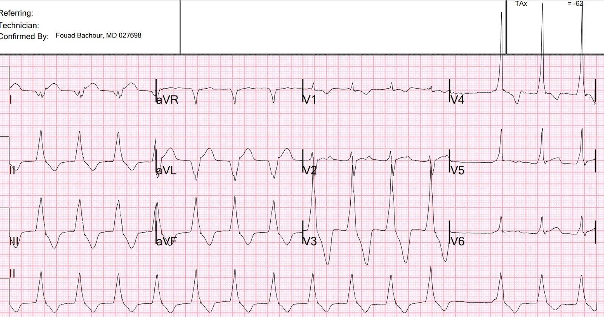
Getting It Right Despite the Wrong Paradigm (Chẩn đoán đúng dù dựa trên mô hình sai)

A Wide Complex Rhythm in an Intoxicated Patient (Nhịp QRS rộng ở một bệnh nhân bị ngộ độc)

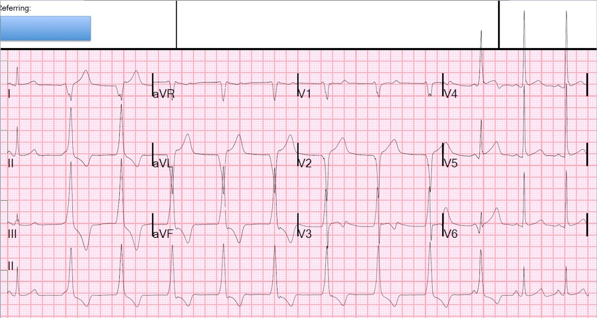
Chest pain and precordial ST depression which resolve, followed by a wide complex rhythm (Đau ngực và ST chênh xuống ở chuyển đạo trước tim đã hết, sau đó xuất hiện nhịp QRS rộng)

An adolescent with trauma, chest pain, and a wide complex rhythm (Một thiếu niên bị chấn thương, đau ngực và nhịp QRS rộng)

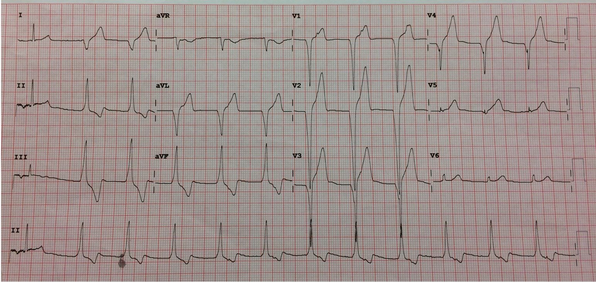
Is this Left Bundle Branch Block? Is there STEMI? (Đây có phải blốc nhánh trái không? Có STEMI không?)

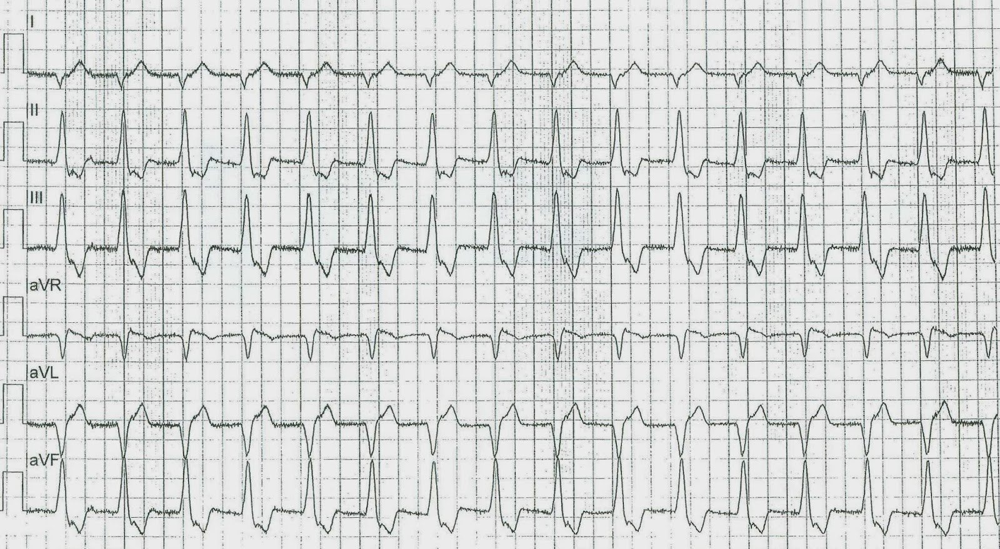
What is the rhythm? And is there new left bundle branch block (LBBB)? (Đây là nhịp gì? Và có blốc nhánh trái (LBBB) mới không?)

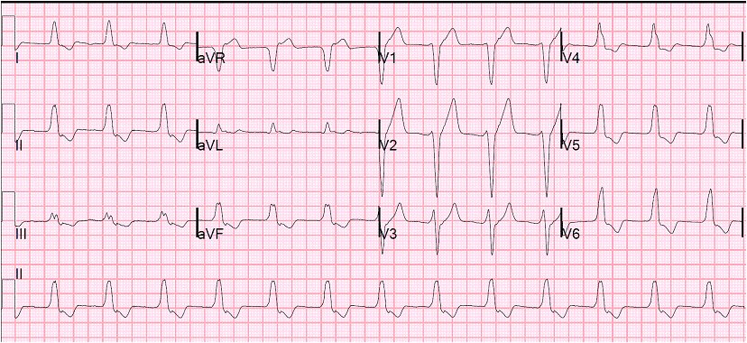
Tài liệu tham khảo:
Ferrier, G. R., Moffat, M. P., và Lukas, A. (1985). Possible mechanisms of ventricular arrhythmias elicited by ischemia followed by reperfusion. studies on isolated canine ventricular tissues. Tạp chí Circulation Research, 56(2), 184–194. https://doi.org/10.1161/01.res.56.2.184
Fesmire, F. M., Percy, R. F., Bardoner, J. B., Wharton, D. R., và Calhoun, F. B. (1998). Usefulness of automated serial 12-lead ECG monitoring during the initial emergency department evaluation of patients with chest pain. Tạp chí Annals of Emergency Medicine, 31(1), 3–11. https://doi.org/10.1016/s0196-0644(98)70274-4
Kaplinsky, E., Ogawa, S., Michelson, E. L., và Dreifus, L. S. (1981). Instantaneous and delayed ventricular arrhythmias after reperfusion of acutely ischemic myocardium: Evidence for multiple mechanisms. Tạp chí Circulation, 63(2), 333–340. https://doi.org/10.1161/01.cir.63.2.333
Meine, T. J., Roe, M. T., Chen, A. Y., Patel, M. R., Washam, J. B., Ohman, E. M., Peacock, W. F., Pollack, C. V., Gibler, W. B., và Peterson, E. D. (2005). Association of intravenous morphine use and outcomes in acute coronary syndromes: Results from the Crusade Quality Improvement Initiative. Tạp chí American Heart Journal, 149(6), 1043–1049. https://doi.org/10.1016/j.ahj.2005.02.010
Tài liệu tham khảo khác
Weinberg B, Zipes D. Strategies to manage the post-MI patient with ventricular arrhythmias. Tạp chí Clin Cardiol 1989;12:86–90.
Sadowski ZP, Alexander JH, Skrabucha B, và cs. Multicenter randomized trial and a systematic overview of lidocaine in acute myocardial infarction. Tạp chí Am Heart J 1999;137:792–8
Alexander JH, Granger CB, Sadowski Z, và cs., thay mặt các Nhà nghiên cứu GUSTO-I và GUSTO-IIb. Prophylactic lidocaine use in acute myocardial infarction: incidence and outcomes from two international trials. Tạp chí Am Heart J 1999;137:799–805.
Bigger JR Jr, Dresdale RJ, Heissenbuttel RH, và cs. Ventricular arrhythmias in ischemic heart disease: mechanism, prevalence, significance, and management. Tạp chí Prog Cardiovasc Dis 1977;19:255–300.

===================================
BÌNH LUẬN CỦA TÔI, bởi KEN GRAUER, MD (9/8/2024):
===================================
Bài đăng hôm nay của BS. Frick trình bày thêm một ví dụ về các điện tâm đồ liên tiếp có giá trị chẩn đoán OMI cấp ngay từ bản ghi thứ 1 trong ca này — vậy mà lại bị nhiều bác sĩ, kể cả bác sĩ tim mạch, bỏ qua vì cho rằng không chỉ điểm tắc động mạch vành cấp.
- Trớ trêu thay — thật may là bệnh nhân này vẫn tiếp tục CP (Chest Pain — đau ngực) và siêu âm tim cho thấy rối loạn vận động thành khu trú — vì 2 yếu tố đó rõ ràng là lý do khiến bệnh nhân được thông tim.
Vì BS. Frick đã trình bày các chi tiết MẤU CHỐT của ca hôm nay một cách xuất sắc — tôi quyết định tập trung bình luận vào một trong 5 điện tâm đồ được trình bày ở phần bàn luận của ông phía trên.
- Để rõ ràng, trong Hình 1 — tôi đã sao chép lại và đánh dấu điện tâm đồ thứ 3 mà BS. Frick trình bày (đây là điện tâm đồ thứ 2 trong 3 điện tâm đồ ghi lại trong khoảng 5 phút).
- Để “dựng bối cảnh” cho điện tâm đồ #3 (mà tôi trình bày trong Hình 1) — bệnh nhân vẫn đang CP tiếp diễn vào lúc ghi điện tâm đồ này — với chẩn đoán “Không có STEMI” và đau thắt ngực không ổn định được đưa ra cho bản ghi này và các bản ghi liên tiếp khác bất chấp kết quả troponin tăng rõ rệt đã có.
SUY NGHĨ CỦA TÔI về điện tâm đồ #3:
Như BS. Frick đã nêu — điện tâm đồ #3 (cũng như 2 điện tâm đồ ghi lại khác trong khoảng 5 phút nói ở trên) rõ ràng có giá trị chẩn đoán OMI cấp.
- Diễn giải các dấu hiệu cấp tính trên điện tâm đồ #3 tốt nhất là bắt đầu bằng việc hiểu nhịp. Tôi đã đánh dấu các sóng P xoang bằng mũi tên ĐỎ. Lưu ý nhịp nền là loạn nhịp xoang, với khoảng P-P thay đổi khá rõ (chậm lại nhiều nhất giữa nhát #6 và 7).
- Dù sóng P bị ẩn một phần trong QRS ở 2 nhát đầu, cũng như ở 6 nhát cuối của bản ghi này — các mũi tên ĐỎ phía trên QRS của từng nhát rộng này làm nổi bật những “nét lệch thêm” xuất hiện ở nhiều điểm quanh QRS, cho thấy rõ các sóng P bị ẩn một phần, về cơ bản xuất hiện “đúng lúc” nếu xét đến loạn nhịp xoang nền.
- Lưu ý phức bộ QRS của nhát #7 nhỏ hơn một chút ở dải nhịp DII dài và V5 dài so với kích thước QRS của các nhát #8 đến 13. Đó là vì nhát #7 là một nhát hỗn hợp (tức là sóng P có mũi tên ĐỎ ngay trước QRS của nhát #7 không có đủ thời gian để dẫn truyền hoàn toàn xuống thất). Sự hiện diện của nhát hỗn hợp chứng minh rằng tất cả các nhát rộng trong bản ghi này đều có nguồn gốc thất.
- Tần số của các nhát rộng này trên điện tâm đồ #3 là ~75/phút. Như BS. Frick đã nêu — điều này xác định nhịp thất là AIVR (nhịp tự thất gia tốc — Accelerated IdioVentricular Rhythm).
- Lý do AIVR xuất hiện trên điện tâm đồ #3 — là tần số của loạn nhịp xoang nền chậm lại sau nhát #5 — và một khi tần số xoang giảm xuống dưới tần số thoát thất gia tốc, AIVR sẽ chiếm quyền (Minh họa bằng giản đồ bậc thang về cơ chế của nhịp này được trình bày bên dưới trong Hình 2).
Khi đã xác định được nhịp trong Hình 1 — chúng ta tập trung đánh giá hình thái ST-T trước tiên ở các nhát dẫn truyền từ xoang (là các nhát #3,4,5 và 6).
- Dù rất nhỏ — các mũi tên XANH DƯƠNG làm nổi bật ST chênh lên chắc chắn ở chuyển đạo I và aVL. Đoạn ST ở cả hai chuyển đạo này thẳng đuỗn bất thường — và có sóng T đảo ngược ở phần cuối (rõ hơn ở chuyển đạo aVL). Xét đến QRS rất nhỏ — sóng Q ở chuyển đạo aVL là rất lớn.
- Mỗi nhát dẫn truyền từ xoang ở 3 chuyển đạo dưới đều cho thấy ST chênh xuống soi gương.
- Ngoài ra — các nhát thất ở các chuyển đạo I,II,III cho thấy sóng T “đầy đặn” không tương xứng và độ lệch đoạn ST không phù hợp (ST chênh lên ở nhát #1,2 tại chuyển đạo I — và ST chênh xuống ở nhát #1,2 tại chuyển đạo II,III).
- Dù khó đánh giá “tính phù hợp” của điểm J chênh lên ở các chuyển đạo trước tim hơn do nhịp AIVR — chuyển đạo V6 cho thấy rõ ST chênh lên tại điểm J không tương xứng, phù hợp với OMI cấp.
ĐIỂM CUỐI CÙNG: Trong lúc chuyển tới trung tâm PCI — đội EMS ghi nhận “các loạt VT”. Dù không có bản ghi nào cho thấy nhịp được cho là “VT” — chúng ta thấy các loạt AIVR tương tự như tôi vừa mô tả cho điện tâm đồ #3 ở mỗi bản ghi trong 4 bản ghi cuối của ca hôm nay. Tôi nghi ngờ đội EMS đã chẩn đoán nhầm AIVR thành VT.
- Như BS. Frick đã nêu — trong bối cảnh OMI cấp đang diễn ra, sự xuất hiện của AIVR thường là một dấu hiệu thuận lợi, chỉ điểm ít nhất một mức độ tái tưới máu nào đó. Không cần điều trị AIVR nếu bệnh nhân ổn định huyết động — vì nhịp này thường đóng vai trò một nhịp “thoát” thích hợp do ổ tạo nhịp xoang tạm thời chậm lại (tức là đúng như những gì xảy ra bắt đầu từ nhát #7 trên điện tâm đồ #3).
- CẢNH BÁO: “Cú hích” nhĩ (atrial kick) bị mất khi có AIVR (vì sóng P không còn được dẫn truyền một khi AIVR chiếm quyền). Hệ quả là — cung lượng tim đôi khi có thể giảm đủ để gây hạ huyết áp có triệu chứng. Khi điều này xảy ra — Atropine liều thấp là điều trị được lựa chọn — vì thuốc thường sẽ làm nút SA nhanh lên đủ để nhịp xoang chiếm lại quyền chỉ huy (với sự phục hồi co bóp nhĩ hiệu quả). Dù vậy, trong phần lớn trường hợp — AIVR là một nhịp ngắn ngủi và lành tính (đồng thời là một dấu hiệu đáng khích lệ cho thấy ít nhất đã có một phần tái tưới máu).

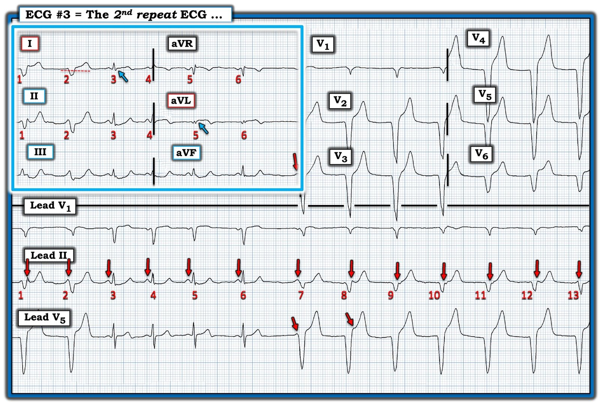

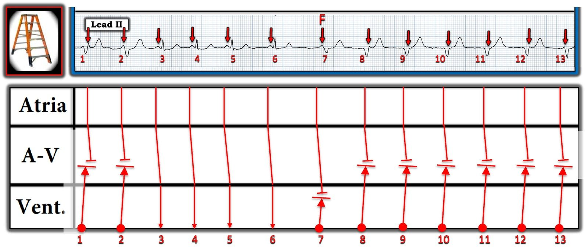